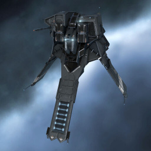

Bantam

Тип корабля: Фрегат
Государство/Организация: Caldari
Примерная стоимость: 203.000 ISK
Описание
В 114-м году по юлайскому летоисчислению крупнейшие государства галактики, увязшие в тяжёлой, затяжной войне без конца и края, были вынуждены обратить внимание на растущую потребность военных флотов в ремонтных кораблях и кораблях обеспечения — она диктовалась самим характером продолжительных боевых действий в межзвёздном масштабе, способных полностью измотать противоборствующие стороны. В Государстве Калдари такой корабль был создан на основе фрегата «Бэнтам» после существенной переработки конструкции.
«Бэнтам» — крепкий и прочный корабль. Он был чрезвычайно эффективен при добыче сырья. При перестройке конструкции обширный корпус «Бэнтама» был модифицирован для несения ремонтных систем. Это снизило полезный внутренний объем фрегата, но позволило сконцентрировать его функциональность на дистанционной накачке щитов дружественных кораблей.
Характеристики
Корпус
Запас прочности корпуса: 310 ед.
Вместимость грузового отсека: 270 м^3
Объем отсека для дронов: 5 м^3
Пропускная способность канала телеуправления: 5 Мбит/с
Масса: 1.480.000 кг
Занимает объем: 20.000,0 м^3 (2.500,0 м^3 в разобранном виде)
Влияние инертности конструкции: 4,1x
Сопротивление корпуса ЭМ-урону: 33 %
Сопротивление корпуса термальному урону: 33 %
Сопротивление корпуса кинетическому урону: 33 %
Сопротивление корпуса фугасному урону: 33 %
Броня
Запас прочности брони: 225 ед.
Сопротивление брони ЭМ-урону: 50 %
Сопротивление брони термальному урону: 45 %
Сопротивление брони кинетическому урону: 25 %
Сопротивление брони фугасному урону: 10 %
Щит
Запас прочности щита: 500 ед.
Влияние на время регенерации щитов: 10 минут и 25 секунд
Сопротивление щита ЭМ-урону: 0 %
Сопротивление щита термальному урону: 20 %
Сопротивление щита кинетическому урону: 40 %
Сопротивление щита фугасному урону: 50 %
Сопротивление средствам РЭП
Сопротивление накопителя нейтрализирующему воздействию: 0 %
Сопротивление воздействию генератору стазис-поля: 0 %
Сопротивление воздействию помех на наводку вооружения: 0 %
Накопитель энергии
Емкость накопителя: 615,0 ГДж
Время востановления заряда: 5 минут и 7 секунд
Целеуказания
Максимальная дальность захвата цели: 40 км
Максимальное количество захваченных целей: 7
Радиус сигнатуры: 35 м
Разрешающая способность систем захвата цели: 850 мм
Эффективность радарной системы: -
Эффективность магнитнометрической системы: -
Эффективность гравиметрической системы: 12 ед.
Эффективность ладарной системы: -
Двигательная установка
Максимальная скорость: 370 м/с
Скорость в варп-режиме: 5,0 а.е./с.
Служба оснащения
Мощность ЦПУ: 200,0 Тф
Мощность реактора: 39 МВт
Калибровка: 400 ед.
Точки монтажа орудийных установок: 2
Точки монтажа пусковых установок: -
Разъемы большой мощности: 3
Разъемы средней мощности: 4
Разъемы малой мощности: 2
Разъемы под установку тюнинг-модулей: 3